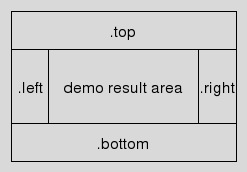

crimp_devguide - CRIMP - The Developer's Guide
Welcome to CRIMP, the C Raster Image Manipulation Package, a set of extensions of Tcl for the handling and processing of images.
This document is a guide for developers working on the "C Raster Image Manipulation Package" (short CRIMP), i.e. maintainers fixing bugs, extending the package's functionality, etc.
Please read
first, if that was not done already. Here we assume that the sources are already available in a directory of your choice, and that you not only know how to build and install them, but also have all the necessary requisites to actually do so. The guide to the sources in particular also explains which source code management system is used, where to find it, how to set it up, etc.
For a demonstration of CRIMP's current abilities see the "demos.tcl" application. Within the crimp source directory run it as
tclsh8.5 demos.tcl
or
tclsh8.5 demos.tcl /path/to/crimp/packages ...
If CRIMP's packages have already been installed, or can be found in one of the paths provided as arguments, then this will simply start the application. Otherwise the demo application will attempt to automatically build them using the critcl package in mode "compile & run". This assumes that the critcl v3 packages were installed, and not just the critcl application. If only the critcl application was installed then this on-the-fly building of CRIMP is not possible and the packages must be installed first before using "demos.tcl".
After starting the application opens a GUI which shows two lists on the left side, of the images available to the demos, and of the demos themselves. The latter list changed contents dynamically based on the number of images selected (0, 1, or 2).
After selecting image and demo the result of the demo is shown on the right side, usually as a plain image, the result of whatever operation was chosen. Some demos generate a slideshow of multiple images, or provide additional GUI elements, i.e. buttons, sliders, etc. for interactive manipulation of the demo.
A few demos do not generate images, but print information to the log window, which is shown on the left, above the lists for images and demos.
The size of the areas allocated to log window, selection lists, and demo results can be modified using the mouse, by dragging the panel separators.
Both overall architecture and concepts like images (image values), image-types, and the general design, are all introduced in the user documentation, namely
This directory contains helper scripts.
These helper scripts, when run, (re)generate the embedded documentation from the documentation sources, or the figures, or both. This requires the applications mimetex, convert (ImageMagick), dtplite, and dia. The latter is, for example, installed by ActiveTcl.
This helper script validates that the documentation markup conforms to the syntax of doctools. Nothing is generated.
This directory contains the documentation sources. The texts are written in doctools format, whereas the figures are a mixture of TeX (math formulas), and tklib's dia(gram) package and application.
This directory contains the documentation converted to regular manpages (nroff) and HTML. It is called embedded because these files, while derived, are part of the fossil repository, i.e. embedded into it. This enables fossil to access and display these files when serving the repositories' web interface. The "Command Reference" link at http://chiselapp.com/user/andreas_kupries/repository/crimp/home is, for example, accessing the generated HTML.
This directory contains specifications of the image file formats for which CRIMP provides readers and/or writers. Currently this is only PGM and PPM, i.e "Portable Grey Map" and "Portable Pix Map" respectively, and Windows's BMP format.
This is the demo application & framework.
This directory is searched by "demos.tcl" for the demonstrations to make available to its user. See Writing a new demo for information on the structure of a demonstration.
This directory is searched by "demos.tcl" for the images to make available to its user and the demos. See Adding a new demo image for more information.
These are the master files of the packages. Based on critcl (v3) they contain all the necessary declarations to build their package.
Each file reads the primitives to implement from the files in the sub-directories "core/" (crimp_core), "operator/" (crimp), and "format/" (crimp_*, except for core).
This is a shared helper file used by the package master files. It contains the general code to load and convert ".crimp" files.
These are the companions to the "crimp*.tcl" files which implement the higher-level interfaces on top of the C-based primitive operations, and determine policies.
The documentation (see "doc/") mainly describes this higher-level API, plus the few primitives which are passed through unchanged, i.e. without getting wrapped into Tcl procedures.
This is a companion Tcl file to "crimp_tk.tcl" and "policy_tk.tcl" which implements a simple plot widget. It essentially wraps Tklib's Plotchart package into a simpler interface.
The main user of this functionality is currently the demonstration framework, "demos.tcl".
This directory contain the sources of the C-level primitives implemented by CRIMP.
The master file "crimp.tcl" reads all the ".crimp" files found in this directory, converting them into proper critcl::cprocs.
This directory contain the sources of the core C-level primitives implemented by CRIMP.
The master file "crimp_core.tcl" reads all the ".crimp" files found in this directory, converting them into proper critcl::cprocs.
This directory contain the sources of the C-level primitives for file and other I/O implemented by the various I/O packages.
The master files "crimp_*.tcl" read all the associated ".crimp" files found in this directory, converting them into proper critcl::cprocs. I.e.
"format/*bmp*.crimp"
"format/*pfm*.crimp"
"format/*pgm*.crimp"
"format/*ppm*.crimp"
"format/*tk*.crimp"
(speak: C op ;) For a few of the primitives in operator/ (see above) the implementations were very similar. This directory contains "templates" for these implementations, with the actual primitives #include'ing them. The templates are configured through a number a C #define's for the parts where the primitives differ.
The files all belong to package crimp.
This is a first attempt at templating some of the C code. It works, but isn't really very nicely done.
While I (AK) have the general ida of using Tcl and Tcl-based macro-processors (like "expand", see Wiki) bouncing around in my head for a better templating and C code generation mechanism there is nothing concrete yet.
This directory contain the C sources for common/shared functionality, mainly the Tcl_ObjType's for "image type"-values and "image"-values, and complex functions I really did not wish to duplicate in the C primitives (AHE support, Rank-Order Filter support, geometry functions, FFT).
As such some of it belongs to package crimp::core, with the large remainder belonging to package crimp.
This directories contains the read procedures for image formats done in pure Tcl, and outside of the main I/O packages.
Currently this is Richard Suchenwirth's strimj'es.
The files in these directories are declared as Tcl companion files of "crimp.tcl", causing them to be sourced automatically by the critcl framework when CRIMP is loaded.
Regarding "c/*" only those not claimed by crimp::core, see above.
The individual primitive C level operations of CRIMP are found in the sub-directories "core/", "operator/", and "format/". See the Directory structure.
Each primitive is handled by a single file with the extension ".crimp".
Note that all files found in these directories and which do not have the extension ".crimp" are by default ignored when "crimp.tcl" loads and processes the primitives. The exception is if a package policy file declares them to be a part of the package in question.
To write a new primitive simply add a new file with the extension ".crimp" to the directory and fill it with content according to the rules below, which specify the format of ".crimp" files.
A ".crimp" file is a plain text file.
The first line in the file contains the name of the primitive it implements.
All following lines, until the first empty line, describe the arguments of the primitive, i.e. their types and names. Note that a line containing only whitespace (space and tab characters) is not empty.
Each line in the argument block describes a single argument.
All lines after the empty line terminating the argument block, to the end of the file, contain the C code implementing the primitive.
As an example, here are the contents of the ".crimp" file for one of the primitives with one of the smallest implementations:
[1] width [2] Tcl_Obj* imageObj [3] [4] crimp_image* image; [5] [6] crimp_input_any (imageObj, image); [7] [8] Tcl_SetObjResult (interp, Tcl_NewIntObj (image->w)); [9] return TCL_OK;
Line 1 contains the name of the primitive, "width". Line 2 is the first line of the argument block. Line 3 terminates this argument block. Lines 4 to 9 are the implementation.
This specific primitive extracts the width from the image it was given as argument and returns it as its result.
The high-level commands wrapping around most of the C level primitives reside in the files matching the pattern "policy*.tcl".
They usually have one of the following purposes:
Aggregating a group of related primitives into a single command which chooses the primitive to use automatically, based on the type(s) of its image argument(s). The command ::crimp max is an example of this, choosing and dispatching to the group of max_*_* primitives.
A nicer (more tcl-ish) interface to a (group of) primitive(s). The command ::crimp meta is an example of that, implementing a dict-like API on top of the raw meta_set and meta_get primitives.
Convenience methods which aggregate other commands, not necessarily primitives, into a larger functionality. The group of ::crimper filter sobel methods is an example of this, wrapping around ::crimp filter convolve (itself an example of (1)) and the commands for creating convolution kernels, implementing a specific well-known filter with a fixed kernel.
Implementing functionality fully in Tcl, where primitives are not needed, or mostly not. The ::crimp transform and ::crimp table commands are examples of this, computing projective transformations and pixel mapping tables, respectively. A better example might be the "::crimp pyramid" methods which encapsulate the higher-order structure of image pyramid processing, leaving the details callback commands.
Their implementation has to obey the following rules:
The CRIMP package has the namespace "::crimp" reserved for its use. All new procedures have to be defined in this namespace, or sub-ordinate namespaces.
New procedures extending an existing ensemble have to be defined in the namespace of that ensemble. (Rule (1) above could have been subsumed into this, because the main command, "::crimp", is an ensemble).
Any new command defined directly in the "::crimp" namespace, i.e. at the top-level of the hierarchy, has to be listed in the namespace export clauses at the bottom of file "policy.tcl".
Public procedures have to have a name starting with a lowercase character.
Internal procedures have to have a name starting with an uppercase character.
The individual demos used by "demos.tcl" reside in the sub-directory "demos/" of the sources.
Each demo is handled by a single file with the extension ".tcl".
Note that all files found in the directory and which do not have the extension ".tcl" are ignored when "demos.tcl" looks for demos it can use.
To write a new demo simply add a new file with the extension ".tcl" to the directory and fill it with content according to the rules below, which specify the format of the demo files.
A demo file is a Tcl script. As such it is a plain text file.
A demo file contains a single command "def", taking two arguments, the name of the demo, and a Tcl dictionary describing it.
The dictionary describing the demo may contain the keys and values listed below. Some of the keys must exist, others are optional. Both will be noted in the desciptions of the keys, below.
Must exist. Its value is the name of the demo, as shown to and seen by the user of "demos.tcl".
Optional. Its value is a script which will be executed by demos.tcl whenever it has to decide which demos to show in the list, based on the selection of images. The result has to be a boolean value, with True signaling that the demo is suitable for the selection, and False that it should not be shown.
Optional. Its value is a script which is run whenever this demo has been chosen by the user. It is expected to create any commands and state it may need during the processing of an image.
Optional. Its value is a script which is run whenever this demo has been de-selected by the user (and possibly some other demo chosen). It is expected to clean up any dynamic resources the demo may have aquired (like timers, open files, etc.). The script does not have to care about procedures and state in the ::DEMO namespace. These are automatically destroyed by the framework.
Optional, technically. Its value is a script which is run whenever the image for the demo has changed. Its responsibility is to apply the demo to the image and show any results. As such leaving this key out of the description makes pretty much no sense at all.
All scripts (see demo description, above) are executed within the ::DEMO namespace and have access to its variables and commands
The demo framework exports a number of supporting commands for use by the scripts in the individual demos. These are:
Of course, as demos have to have access to CRIMP's functionality. All known crimp packages are loaded, i.e.
crimp::tk
crimp::bmp
crimp::pgm
crimp::pfm
crimp::ppm
Returns the N'th image selected by the user. Counted from 0. If not specified 'N' defaults 0.
Returns the number of selected images. Most useful to the 'active' script.
Returns a list containing all selected images.
Takes an image I and displays it in the demo result area for the user to see.
Takes a list of images and displays them in the demo result area for the user to see, as a slideshow which cycles through the images. The user gets a bevy of buttons to start/stop the cycling, change cycle interval, and direction.
Writes the text T to the demo log window, followed by a newline
Writes the text T to the demo log window. No newline is added after the text.
The demo framework has a number of hook points in the GUI for use by demos. These are:
.left
.right
.top
.bottom
These widgets are ttk::frames placed to the left, right, top and bottom of the demo result area and usually empty. The demo can put its own interface elements there, buttons, sliders, plots, etc. pp. When not empty the layout roughly looks like:

The demo's UI elements underneath these hooks are automatically destroyed when the demo is shut down, before its 'shutdown' script is run.
The individual demonstration images used by "demos.tcl" reside in the sub-directory "image/" of the sources.
Each image is handled by a single file with the extension ".png", whose contents have to be in the PNG image file format.
Note that all files found in the directory, and which do not have the extension ".png", are ignored when "demos.tcl" looks for images it can use.
To add a new image simply copy the image file into the directory, assuming that it has the correct extension and file format. Otherwise convert the image to PNG and change the extension to suit.
Copyright © 2011 Andreas Kupries
Copyright © 2011 Documentation, Andreas Kupries